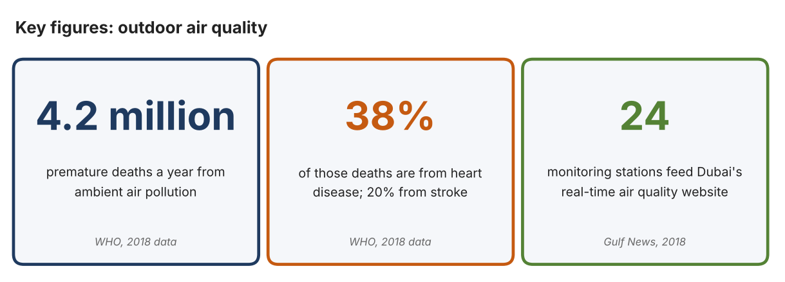
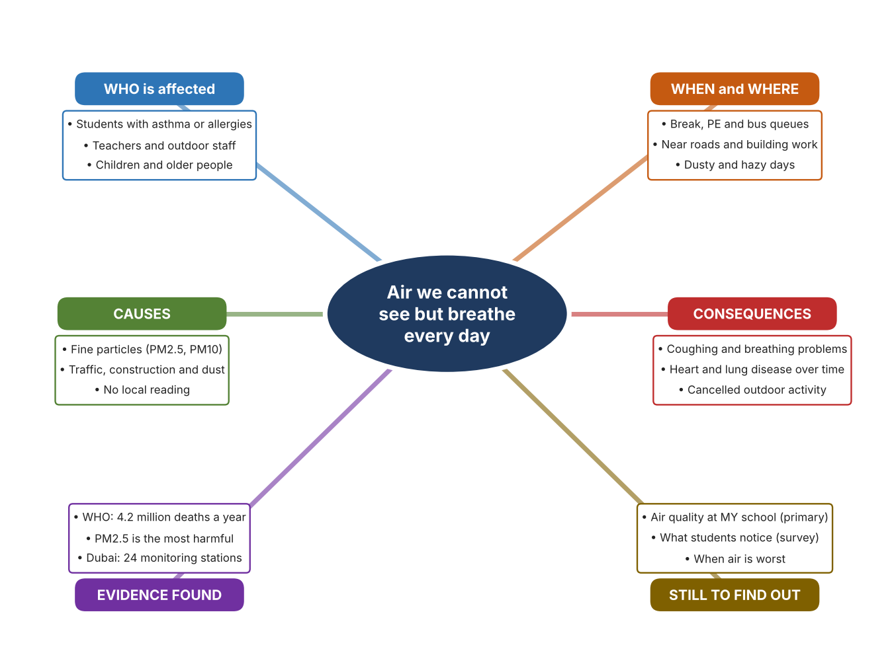
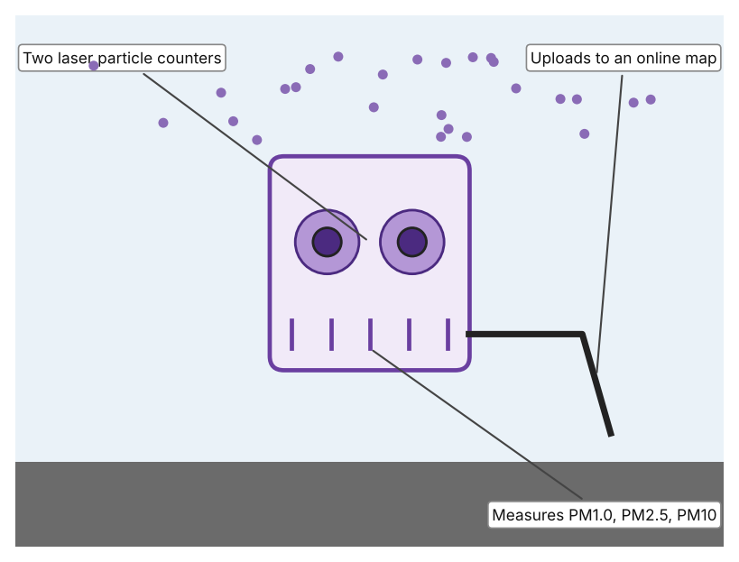
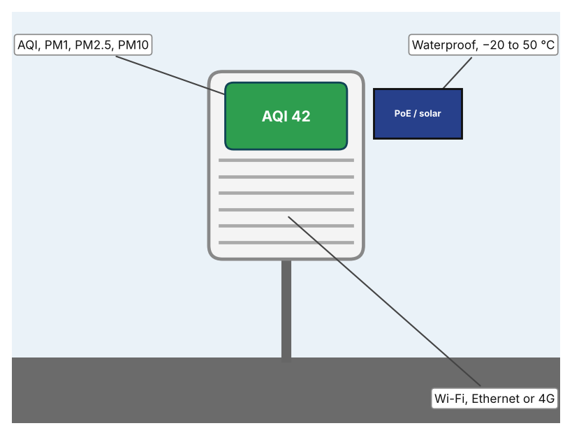
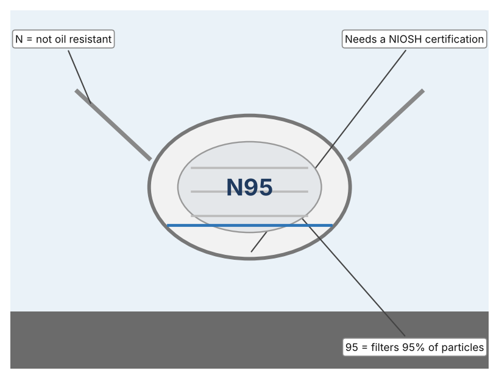

A1 · Design need
Identify and explain the problem faced by your client and community.
My client is the Health and Wellbeing Committee of a Dubai school, represented by the school nurse. The committee knows that some students cough, get itchy eyes or have trouble breathing on dusty days, and it needs students to be protected from poor outdoor air. It also needs decisions about outdoor activity to be based on measurement of the air at the school, because the nearest official station may be far away.
The people most affected are students who have asthma or allergies, because poor air triggers their symptoms. Teachers and outdoor staff are a second group, because they spend long periods outside. Younger children and older relatives are a third group, because the WHO states that children and older adults are more susceptible to harm from air pollution.
The need is real because air pollution is a major cause of death. The World Health Organization estimates that ambient air pollution causes 4.2 million premature deaths a year, of which 38% are from ischaemic heart disease and 20% from stroke, and it identifies fine particles (PM2.5) as the most harmful pollutant (World Health Organization). In Dubai, a public website shows real-time hourly air quality from 24 monitoring stations (“Website to Show Real-Time Air Quality in Dubai”). That is a useful service, but it shows the air at the stations, and I do not know how well it describes the air at my school gate.
Figure 1 summarises the key numbers. The WHO figures are global and use 2018 data, and the Dubai article is from 2018, so I treat them as a pattern and not as today's local picture. In my own words: polluted air does not look dangerous, so people need a number to notice it. Figure 2 is my mind map of the problem.
296 words


A2 · Research plan
Six research questions of different types, each with a priority, a research type and evidence.
| # | Question | Priority | Primary / secondary | Evidence | Brief answer |
|---|---|---|---|---|---|
| 1 | Factual: How many deaths are linked to ambient air pollution, and which pollutant is the most harmful? | High | Secondary | WHO, Health Risks page (Appendix A, Source 1) | 4.2 million premature deaths a year (2018 data); fine particles PM2.5 are the most harmful; children and older adults are more susceptible. |
| 2 | Factual: How is air quality reported in Dubai? | High | Secondary | Gulf News, 20 Nov. 2018 (Appendix A, Source 2) | A website shows hourly real-time and forecast air quality as an index from 24 monitoring stations; the article does not name the pollutants. |
| 3 | Conceptual: What do PM1.0, PM2.5 and PM10 mean, and how can they be measured cheaply? | Medium | Secondary | PurpleAir page (Source 3); IQAir page (Source 4) | They are particles of different sizes. Low-cost sensors use laser particle counters to measure all three and upload the data to a map. |
| 4 | Debatable: Should students depend on official station data, a local monitor, or protective masks? | Medium | Secondary | Appendix A, Sources 2, 3, 4 and 5 | Stations are accurate but far away; a local monitor gives local data but needs care; masks protect one person but only work if worn correctly. My view: local data lets people choose. |
| 5 | Debatable (challenges my assumption, UAE source): Dubai already publishes air quality, so is a school-level measurement needed? | High | Secondary | Gulf News, 2018 (Source 2); WHO (Source 1) | The service is real, but it covers 24 stations for a large city, so conditions at one school may differ. The 2018 article is old, so I must check what is available now and measure my own site. |
| 6 | Factual (primary): What do students notice about the air outdoors and what do readings of dust or haze show on different days? | High | Primary | Own air observation log and student survey (Appendix A, Sources 6 and 7) | [Student data needed: write the observations (with date and time) and survey averages, then two sentences on the pattern you see.] |
A3 · Existing products
Three significantly different products, each analysed with ACCESS FM, with pros and cons.
Product 1: Low-cost particle sensor (PurpleAir PA-II)

Illustration by the author based on the PurpleAir PA-II listing, AQ-SPEC (Appendix A, Source 3). [Student: replace with a photo from the source, cited MLA 9]
Product 2: Outdoor air quality monitor (IQAir AirVisual Outdoor)

Illustration by the author based on “AirVisual Outdoor,” IQAir (Appendix A, Source 4). [Student: replace with a photo from the source, cited MLA 9]
Product 3: N95 respirator

Illustration by the author based on “NIOSH N95 Designation,” Health Canada (Appendix A, Source 5). [Student: replace with a photo from the source, cited MLA 9]
ACCESS FM analysis
| ACCESS FM | Product 1 | Product 2 | Product 3 |
|---|---|---|---|
| Aesthetics | Small box with two sensor ports; looks are not described (AQ-SPEC). | Weatherproof outdoor unit with a display; looks are not described (IQAir). | White cup shape with straps; looks are not described. |
| Cost | Price not stated (AQ-SPEC). | US$299.99 (IQAir). | Price not stated on the page. |
| Customer | Community scientists and monitoring groups. | Schools, homes and businesses that need an outdoor reading. | Individuals in dusty air; needs to be fitted correctly. |
| Environment | USB powered, no battery; the data go to the cloud through Wi-Fi. | 100–240 V through a PoE adapter; can run on Wi-Fi 2.4 GHz. | Single use; not discussed on the page. |
| Size | 50 × 38 × 21 mm (sensor module listing). | 6.38 × 2.72 × 7.95 in. | Worn on the face; sizes vary. |
| Safety | No hazard stated. | Waterproof; mains-powered through PoE. | Only NIOSH-certified respirators are approved; an uncertified “N95” is not. |
| Function | Measures PM1.0, PM2.5 and PM10 with two Plantower PMS5003 counters. | Reports AQI, PM1, PM2.5 and PM10 plus temperature, humidity, pressure and optional CO2. | Filters at least 95% of particles; not oil-resistant. |
| Materials | Materials are not stated. | Materials are not stated; the page says it is waterproof. | Filter fabric; materials are not described. |
Pros and cons
| Product 1 | Product 2 | Product 3 | |
|---|---|---|---|
| Pro | Measures particles at three sizes and shows them on a public map. | Gives the Air Quality Index and many other values and is built for the outdoors. | Protects the wearer straight away and is cheap. |
| Con | Needs power and Wi-Fi and has no display of its own on the listing. | Costs US$299.99 and needs a power adapter. | Does not measure the air, and it only works if fitted well and worn. |
A4 · Design brief
Restate the need, summarise the research and the existing products, and state the design intent.
My client, the Health and Wellbeing Committee of a Dubai school, needs students to be protected from poor outdoor air, with decisions based on measurements at the school. The problem is serious: the WHO estimates that ambient air pollution causes 4.2 million premature deaths a year, and that PM2.5 is the most harmful pollutant (Appendix A, Source 1). Dubai publishes real-time air quality from 24 monitoring stations, but the report I found is from 2018 (Appendix A, Source 2).
My research shows that the harm comes from particles too small to see, so a measurement is the only way to know (Appendix A, Sources 1 and 3). Official stations cover a large city, so conditions at one school may differ. My debatable questions led me to decide that station data, local monitors and masks each cover only part of the problem, and my challenged assumption (that a public website already solves the problem) showed me that I need local evidence. I will gather my own evidence with the air log and the survey, always with permission (Appendix A, Sources 6 and 7).
I analysed three very different existing solutions. A low-cost particle sensor measures PM1.0, PM2.5 and PM10 and uploads them to a map, but it needs power and Wi-Fi (Appendix A, Source 3). An outdoor monitor reports the Air Quality Index and other values in a weatherproof unit, but it costs US$299.99 (Appendix A, Source 4). An N95 respirator protects the wearer immediately, but it does not measure anything and works only when fitted well (Appendix A, Source 5). They give me three ideas for inspiration: counting particles, reporting an index, and protecting a person. Each has a weakness that another covers.
My design intent is therefore to create a solution that measures the quality of the air at the school and tells people clearly when it is unhealthy. It must be affordable, easy to read in seconds, able to work outdoors in dust and heat, and safe to use. I have deliberately not fixed what form it will take. That decision will be made in Criterion B, after I analyse my own log and survey against the evidence in Appendix A.
363 words
Appendix A · Research notes and sources
Secondary sources in MLA 9, with notes and where each source is used.
| # | Source (MLA 9) | Key notes | Used in |
|---|---|---|---|
| 1 | World Health Organization. “Air Quality, Energy and Health: Health Risks.” WHO, www.who.int/teams/environment-climate-change-and-health/air-quality-and-health/sectoral-interventions/ambient-air-pollution/health-risks. Accessed 21 Oct. 2026. | 4.2 million premature deaths a year from ambient air pollution (WHO 2018): 38% ischaemic heart disease, 20% stroke, 18% COPD, 18% acute lower respiratory infections, 6% lung cancer; PM2.5 most harmful; children and older adults more susceptible. | A1; A2 Q1 and Q5; A4. |
| 2 | “Website to Show Real-Time Air Quality in Dubai.” Gulf News, 20 Nov. 2018, gulfnews.com/amp/story/uae%2Fenvironment%2Fwebsite-to-show-real-time-air-quality-in-dubai-1.60481352. Accessed 21 Oct. 2026. | Hourly real-time and forecast data on the Dubai Air Environment website; air quality index; 24 monitoring stations; pollutants not stated. Source is from 2018. | A1; A2 Q2 and Q5; A4. |
| 3 | “PurpleAir PA-II.” AQ-SPEC, South Coast Air Quality Management District, www.aqmd.gov/aq-spec/product/purpleair-pa-ii. Accessed 21 Oct. 2026. | PM1.0, PM2.5 and PM10 from two Plantower PMS5003 laser counters; USB powered, no battery; uploads to a cloud map; 50 × 38 × 21 mm; price not stated. | A2 Q3 and Q4; A3 Product 1; A4. |
| 4 | “AirVisual Outdoor.” IQAir, www.iqair.com/us/products/air-quality-monitors/airvisual-outdoor-2-pm. Accessed 21 Oct. 2026. | US$299.99; AQI, PM1, PM2.5, PM10, temperature, humidity, pressure, optional CO2; PoE; Ethernet, Wi-Fi 2.4 GHz, 3G/4G modem; waterproof; −20 to 50 °C; 6.38 × 2.72 × 7.95 in. | A2 Q3 and Q4; A3 Product 2; A4. |
| 5 | “NIOSH N95 Designation for Filtering Facepiece Respirators (FFR).” Health Canada, 22 Oct. 2020 (modified 3 Jan. 2024), www.canada.ca/en/health-canada/services/drugs-health-products/covid19-industry/medical-devices/personal-protective-equipment/medical-masks-respirators/niosh-n95-designation.html. Accessed 21 Oct. 2026. | N = not oil-resistant; 95 = filters at least 95% of particles; a respirator marked “N95” without NIOSH certification is not approved. Page is archived. | A2 Q4; A3 Product 3; A4. |
| 6 | Primary: outdoor air observation log, completed by the student on [date]. Accessed own data. | [Student: summarise your counts.] | A2 primary question; A4. |
| 7 | Primary: survey of [number] people, completed on [date]. | [Student: summarise your averages.] | A2 primary question; A4. |
Primary research instrument 1: outdoor air observation log
Student records observations of the air with permission and a teacher present; use a phone app or an air-quality website for readings if available.
| Date and time | Visibility (clear/hazy) | Dust or smell (Y/N) | Reading (AQI or PM2.5) | Students coughing (Y/N) | Notes |
|---|---|---|---|---|---|
| Morning | |||||
| Midday | |||||
| Afternoon | |||||
| Bus bay |
Primary research instrument 2: survey
Rate each statement from 1 (strongly disagree) to 5 (strongly agree). Collect responses with permission and record no names.
| Statement | 1 | 2 | 3 | 4 | 5 | Total responses |
|---|---|---|---|---|---|---|
| The air feels dusty or heavy at school on some days. | ||||||
| I cough or get itchy eyes outdoors at school. | ||||||
| I know where to find the air quality for my area. | ||||||
| I would change my outdoor activity after a clear air quality warning. |